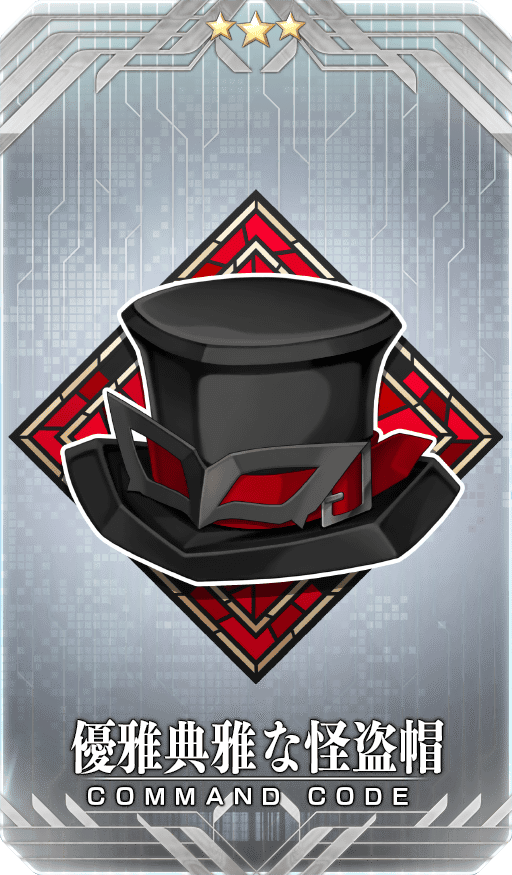
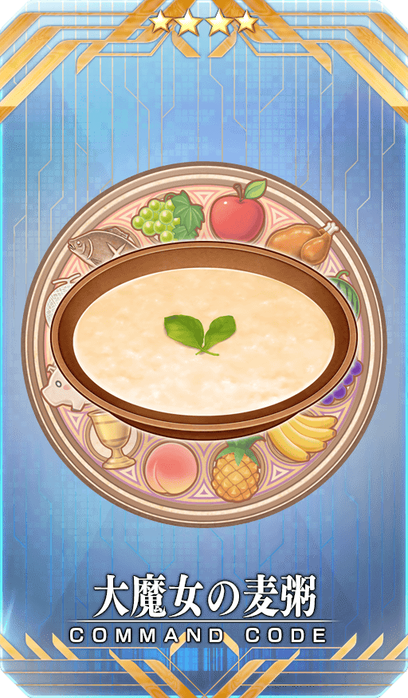
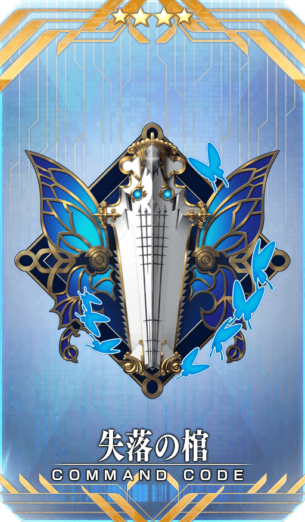
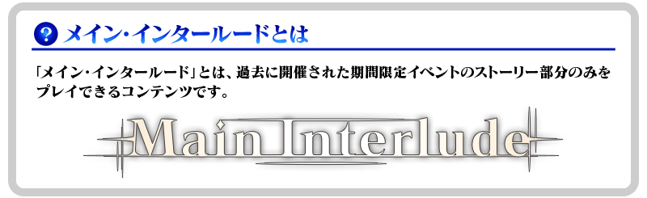
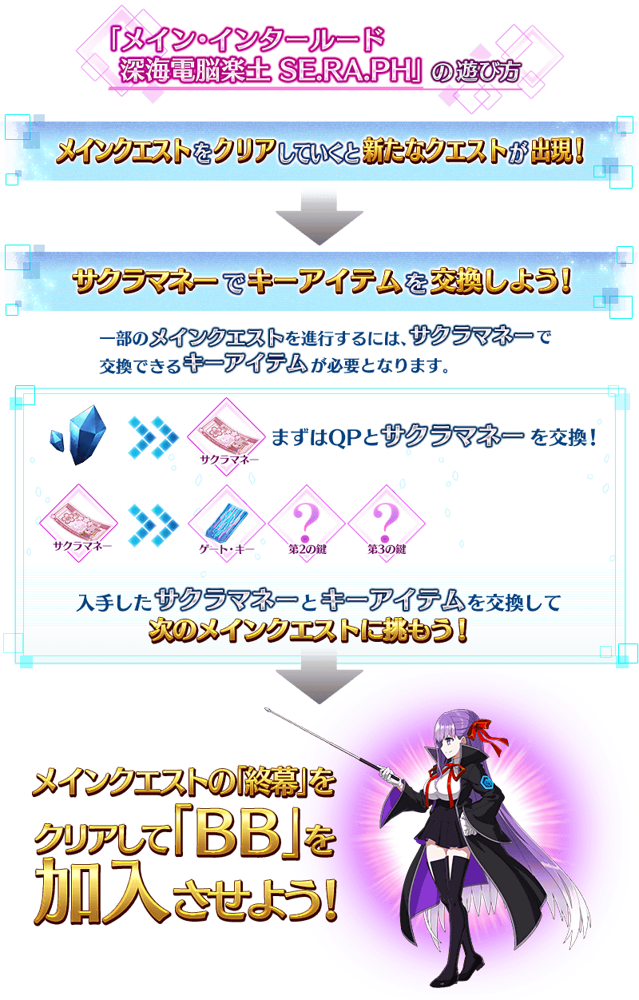
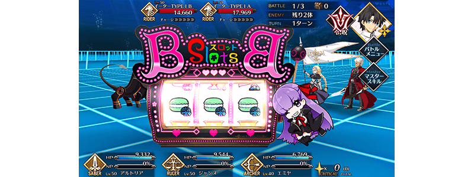
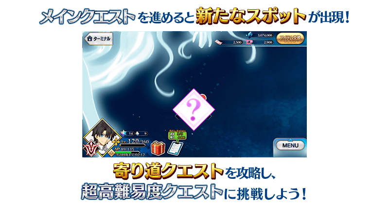
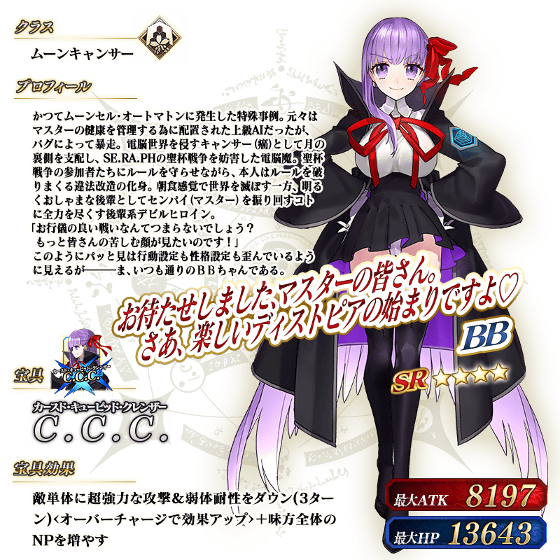

配合預定在2022年3月上旬期間限定活動「白色情人節2022」，舉辦『「白色情人節2022」舉辦前夕宣傳活動』！
◆宣傳活動舉辦期間◆
2022年2月23日(三) 17:00～3月2日(三) 11:59
※本頁面皆為開發中圖片。會有與實際圖片相異的情況。
為了記念期間限定活動「白色情人節2022」的舉辦，實施特別登入獎勵。
在下述的期間中登入7次(1天算1次)的話，贈送最多赤銅果實2個、白銀果實2個、黃金果實1個、聖晶石3個！
◆舉辦期間◆
2022年2月23日(三) 17:00～3月3日(四) 2:59
※在舉辦期間內合計登入7天的話，可領取所有的登入獎勵。
◆贈送對象◆
2022年3月2日(三) 2:59前通過「特異點F 炎上汙染都市 冬木」的御主對象
※上述時間前，在管理室(ターミナル)畫面的關卡橫幅必須要有「CLEAR」的文字顯示。
◆登入獎勵內容◆
| 登入次數 | 贈送內容 | ||
|---|---|---|---|
| 第1次 |

|
赤銅果實 1個 | |
| 第2次 |

|
白銀果實 1個 | |
| 第3次 |

|
聖晶石 1個 | |
| 第4次 |
|
赤銅果實 1個 | |
| 第5次 |
|
白銀果實 1個 | |
| 第6次 |

|
黃金果實 1個 | |
| 第7次 |
|
聖晶石 2個 | |
※第1次的登入獎勵會在2月23日(三) 17:00以後配發。 ※之後的登入獎勵會在每天3:00配發。 ※合計7天內能領取，但根據成為贈送對象的時間點，可能無法到此上限。
在迦勒底之門內每日出現的關卡「蒐集種火」的消耗AP以期間限定變成1/2！(就算在戰鬥中撤退的情況，也會是同様的消耗量)
◆舉辦期間◆
2022年2月23日(三) 17:00～3月2日(三) 11:59
◆對象關卡◆
・蒐集種火
週一 蒐集種火<殺・槍篇>初級、中級、上級、超級、極級
週二 蒐集種火<騎・劍篇>初級、中級、上級、超級、極級
週三 蒐集種火<術・弓篇>初級、中級、上級、超級、極級
週四 蒐集種火<槍・殺篇>初級、中級、上級、超級、極級
週五 蒐集種火<劍・騎篇>初級、中級、上級、超級、極級
週六 蒐集種火<弓・術篇>初級、中級、上級、超級、極級
週日 蒐集種火<隨機篇>初級、中級、上級、超級、極級
【蒐集種火 關卡的難易度等】
| 難易度 | 推薦Lv | 消耗AP |
|---|---|---|
| 初級 | 5 | 10→5 |
| 中級 | 10 | 20→10 |
| 上級 | 25 | 30→15 |
| 超級 | 40 | 40→20 |
| 極級 | 60 | 40→20 |
在達文西工房的「稀有稜鏡交換」，永久追加『「CBC2021」限定 概念禮裝交換商店』。
交換『「CBC2021」限定 概念禮裝交換商店』的話，會贈予「CBC2021特別邀請函」到禮物箱。「CBC2021特別邀請函」在管理室(ターミナル)畫面右上的「活動報酬」鍵或達文西工房的「活動道具交換」內的「迦勒底男性精選2021」，可交換1張「CBC2021」限定的概念禮裝。
※想用「CBC2021特別邀請函」交換概念禮裝的話，必須推進至通過「特異點F 炎上汙染都市 冬木」。
◆追加時間◆
2022年2月23日(三) 17:00～
◆追加道具(永久)◆
| 追加道具 | 能交換次數 | 1次交換所需的 稀有稜鏡數 |
|---|---|---|
| 「CBC2021」限定 概念禮裝交換商店 | 1次 | 3個 |
※在「稀有稜鏡交換」追加的『「CBC2021」限定 概念禮裝交換商店』為永久，沒有交換期限。 ※請注意「迦勒底男性精選2021」舉辦時，有使用過「CBC2021特別邀請函」交換禮物履歷的情況無法於達文西工房的「稀有稜鏡交換」交換。
為了記念「白色情人節2022」舉辦，在達文西工房的「魔力稜鏡交換」「稀有稜鏡交換」，永久追加下述的指令紋章。
就算已經持有對象指令紋章的情況也可於「魔力稜鏡交換」及「稀有稜鏡交換」獲得。
◆追加時間◆
2022年2月23日(三) 17:00～
◆在「魔力稜鏡交換」追加的指令紋章◆
|  |
★★★R |
◆追加道具(永久)◆
| 追加道具 | 能交換次數 | 1次交換所需的 魔力稜鏡的數 |
|---|---|---|
| ★3(R)優雅典雅な怪盗帽 | 1次 | 300個 |
※「魔力稜鏡交換」に追加される1種指令紋章は永久となり、交換期限はありません在「魔力稜鏡交換」追加的1種指令紋章為永久，沒有交換期限。
◆在「稀有稜鏡交換」追加的指令紋章◆
|  |
★★★★SR |
|  |
★★★★SR |
◆追加道具(永久)◆
| 追加道具 | 能交換次數 | 1次交換所需的 稀有稜鏡的數 |
|---|---|---|
| ★4(SR)大魔女の麦粥 | 1次 | 2個 |
| ★4(SR)失落の棺 | 1次 | 2個 |
※在「稀有稜鏡交換」追加的2種指令紋章為永久，沒有交換期限。

可在達文西工房的「稀有稜鏡交換」開放的「Main Interlude 深海電腦樂土 SE.RA.PH」，變得通過主線關卡第1部 終局特異點後可免費開放！
※已經用「稀有稜鏡交換」交換的情況，會返還交換使用的同數量稀有稜鏡到禮物箱。
◆免費開放時間◆
2022年2月23日(三) 17:00～
※「Main Interlude 深海電腦樂土 SE.RA.PH」關卡開放權的免費開放沒有期限。
◆免費開放條件◆
滿足以下條件的御主才能免費交換
・通過主線關卡第1部「終局特異點」
◆有關「Main Interlude 深海電腦樂土 SE.RA.PH」的注意◆
※就算已經通過下述期間限定活動的情況也可遊玩。
・Fate/EXTRA CCC×Fate/Grand Order 特別活動「深海電腦樂土 SE.RA.PH」
・特別活動「復刻版:深海電腦樂土 SE.RA.PH -Second Ballet-」
※故事與「復刻版:深海電腦樂土 SE.RA.PH -Second Ballet-」同樣內容。
※在過去舉辦的「深海電腦樂土 SE.RA.PH」「復刻版:深海電腦樂土 SE.RA.PH -Second Ballet-」獲得過「聖杯」的情況，「Main Interlude 深海電腦樂土 SE.RA.PH」中會以「傳承結晶」代替「聖杯」做為通過報酬。
※無法獲得一部份道具。
※在進行關卡必須的一部份道具可消耗QP來獲得。
※在關卡通過時可獲得的戰利品及關卡通過報酬與過去舉辦的「深海電腦樂土 SE.RA.PH」報酬不同。
※無法遊玩自由關卡等一部份的關卡。
※適用的支援編成為設定成「平常關卡」。

關於「Main Interlude 深海電腦樂土 SE.RA.PH」加入從者
「★4(SR)BB」會在通過「Main Interlude 深海電腦樂土 SE.RA.PH」的主線關卡「終幕」後加入。
還有，「★4(SR)BB」的靈基再臨必要道具「回憶的緞帶」，可藉由推進後半主線關卡入手。
※「BB(SR・MoonCancer)【寶具強化用】」為免費化的對象外。 ※「BB(SR・MoonCancer)【寶具強化用】」可在達文西工房的「稀有稜鏡交換」交換。關於交換1位必須有2個稀有稜鏡。還有，在已經可強化「★4(SR)BB」到寶具等級5狀況的情況，無法交換。 ※在通過「Main Interlude 深海電腦樂土 SE.RA.PH」時入手「累計第6位以後」的「★4(SR)BB」的話，贈送稀有稜鏡1個到禮物箱。
關於「BB拉霸」
主線關卡中，在戰鬥開始時會有「BB拉霸」啟動的情況。
BB拉霸會對應隨機轉到的圖案，在戰鬥賦予各式各樣的效果。

關於繞路關卡的發生
推進「Main Interlude 深海電腦樂土 SE.RA.PH」主線關卡第一幕的話，「復刻版:深海電腦樂土 SE.RA.PH -Second Ballet-」會出現享受追加劇本的繞路關卡。關卡在通過的話會開放下1個，最後開放超高難易度關卡。
攻略所有的關卡，得到特別的報酬吧！
※繞路關卡中，在戰鬥開始時不會發生「BB拉霸」。
◆關卡開放條件◆
通過「Main Interlude 深海電腦樂土 SE.RA.PH」主線關卡第一幕至特定的進行度

得到概念禮裝EXP卡「BBショット！」吧！
做為「Main Interlude 深海電腦樂土 SE.RA.PH」的報酬，可入手能大幅強化概念禮裝大幅的EXP卡！ 無論如何請藉此機會，強化中意的概念禮裝！

介紹「★4(SR)BB」的寶具演出！
介紹「★4(SR)BB」的寶具演出！
其他還有，「深海電腦樂土 SE.RA.PH免費開放記念Pick Up召喚」以期間限定同時舉辦！
關於詳情，請自下述橫幅確認。
■「深海電腦樂土 SE.RA.PH免費開放記念Pick Up召喚」詳細情報